Müller-BBM Industry Solutions GmbH · Federal Department of Environment · TUM 1.000+ Project
Determining the Noise Behaviour of the German Vehicle Fleet by Measurement
Classifying passenger cars (PKW), heavy vehicles (LKW) and other vehicles from roadside acoustic measurements – data analysis, feature engineering and two machine-learning approaches, built in a five-day project week.
Project of the Federal Department of Environment
Determine the noise behaviour of the German vehicle fleet by making measurements at 30 different locations.
Project aim: develop a classification method for passenger cars and heavy vehicles in order to distinguish them.
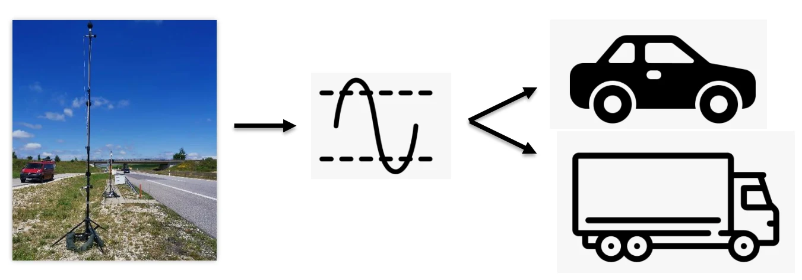
Timeline
| Day | Activities |
|---|---|
| Day 1 – 08/01 | Kick-off · introduction to the problem · project management · data processing: analyse data distribution and use different data features · machine learning: try different models |
| Day 2 – 09/01 | Continue with data processing · machine learning: build one big model |
| Day 3 – 10/01 | Continue with data processing · model training · model testing · performance analysis · look into further approaches · reflection meeting |
| Day 4 – 11/01 | Look deeper into further approaches · analyse results · documentation |
| Day 5 – 12/01 | Presentation · poster creation |
Problem approach
- Data
- →
- Data processing
- +
- Build ML models
- →
- Model training
- ⇄
- Model validation & parameter adjustment
- →
- Model testing
- →
- Presentation of results
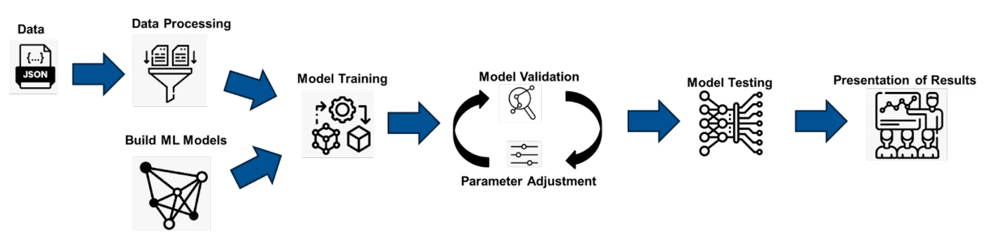
Captured data
Each pass-by record contains 34 fields. The fields highlighted in the original slide (outlined below) were the ones selected for modelling.
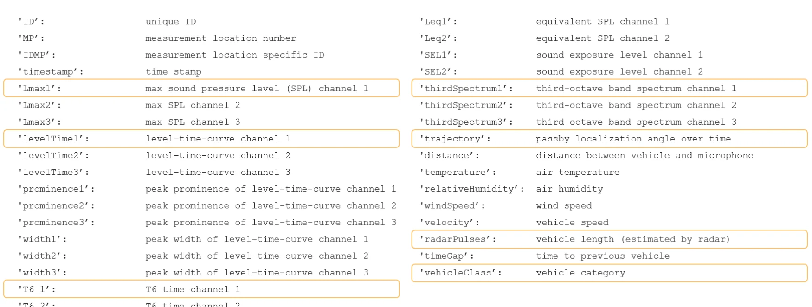
Examples
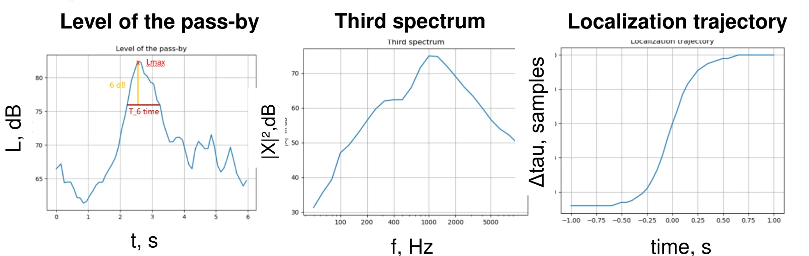
Lmax: maximum sound pressure level (max of thelevelTimecurve)T_6: width of the peak in thelevelTimecurve at (Lmax − 6) dB
thirdSpectrum: third-octave spectrum measured in a short time interval around the time of maximum sound leveltrajectory: measure of vehicle localization (angle between the microphone-pair axis and the direction of sound)
Data processing
Slope of trajectory as an additional feature
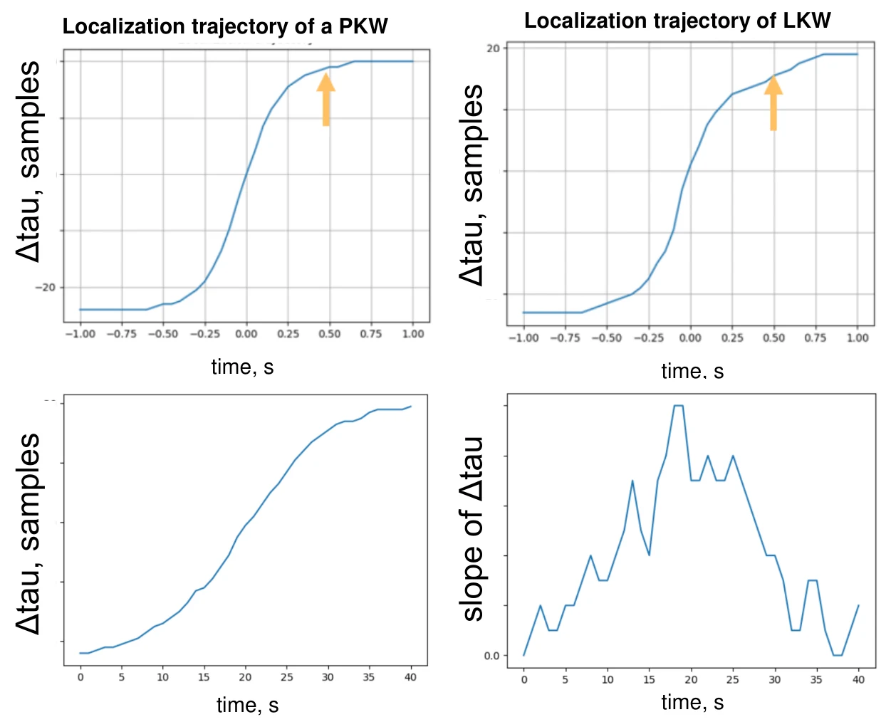
- LKWs are longer ⇒ slower increase of the localization angle.
- The point-wise slope of
trajectorycan be used as an additional data feature.
Filtering out noise in level-time curves
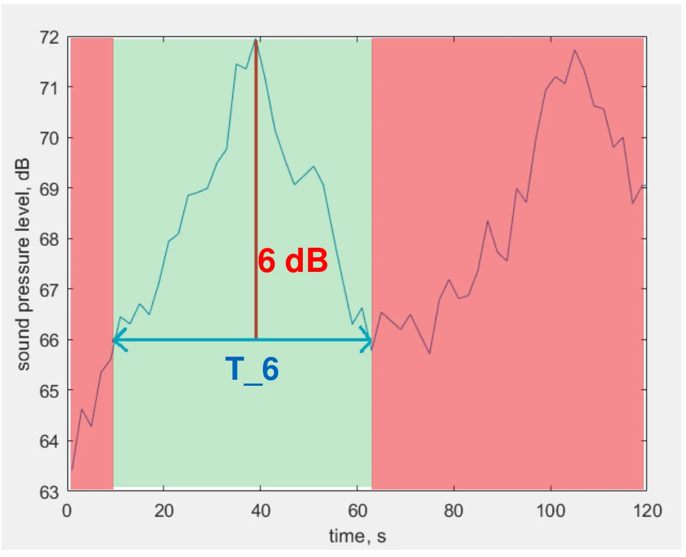
- Cropping
levelTimedata to the T_6 interval helps remove noise produced by non-target cars in the audio recordings. - This should be handled carefully for closely following cars (their peaks might not be resolved by the 6 dB criterion).
Removing features by normalization
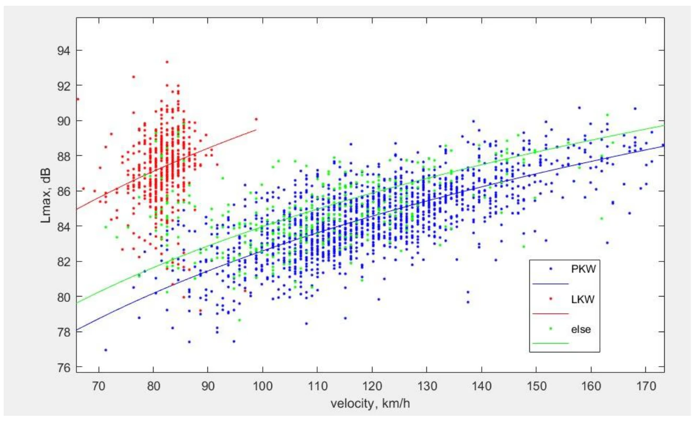
- The maximum sound pressure level (Lmax) increases linearly with lg(velocity).
- The feature
velocitycan be discarded if Lmax values are normalized by lg(velocity).
Vehicle class distribution
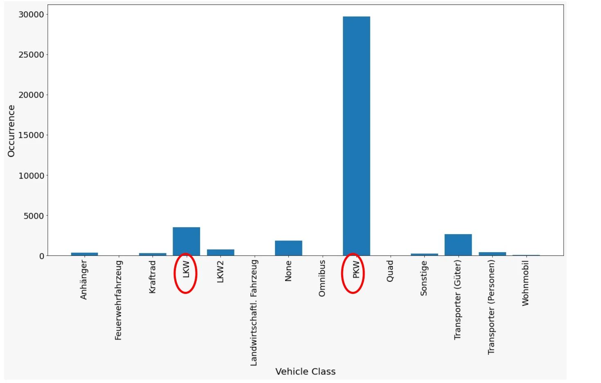
Filtering features
df – all data points, all features (40114 × 34) → filtered_df – all data points, suggested features (40114 × 9):
ID · MP · Lmax1 · levelTime1 · T6_1 · thirdSpectrum1 · trajectory · radarPulses · vehicleClass
Adjusting the class distribution
The data table is shuffled, then an equal number of data points is extracted for each class, giving filtered_final_df with an equal ratio Else : LKW : PKW (10563 × 9).
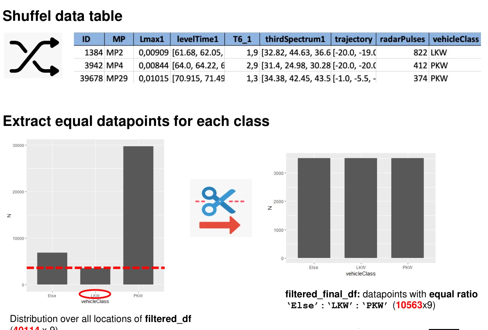
Normalization
- Single values: find min and max in the column and normalize as
new_x = (x − min) / (max − min). - Arrays: divide each value in every array by the maximum value found in the column.
Locations with special conditions were removed:
| Location | Condition |
|---|---|
| MP 30, MP 5 | Road surface |
| MP 12, MP 13 | Winter |
Datasets
Status: designed (grey), created, used (highlighted).
| Name | Description | Size |
|---|---|---|
| ID1 | all data points, all features | 29882 × 34 |
| ID2 | all data points, selected features | 39676 × 9 |
| ID3 | all data points, all features, 3 classes | |
| ID4 | all data points, selected features, 3 vehicle classes | 39676 × 9 |
| ID5 | all features, 3 equally distributed vehicle classes | |
| ID6 | selected features, 3 equally distributed vehicle classes | 10419 × 9 |
| ID7 | all features, 3 equally distributed classes, special locations in bottom rows | |
| ID8 | selected features, 3 equally distributed vehicle classes, special locations in bottom rows | 10419 × 9 |
| ID9 | selected features, 3 equally distributed vehicle classes, special locations excluded | 9873 × 9 |
| ID10 | selected features, 3 equally distributed vehicle classes, additional features |
Approach 1: neural network
Model 1 is a Transformer applied to the levelTime1 sequence; its output is combined with the other parameters and fed into Model 2, a dense neural network that outputs one of three classes: PKW, LKW or ELSE.
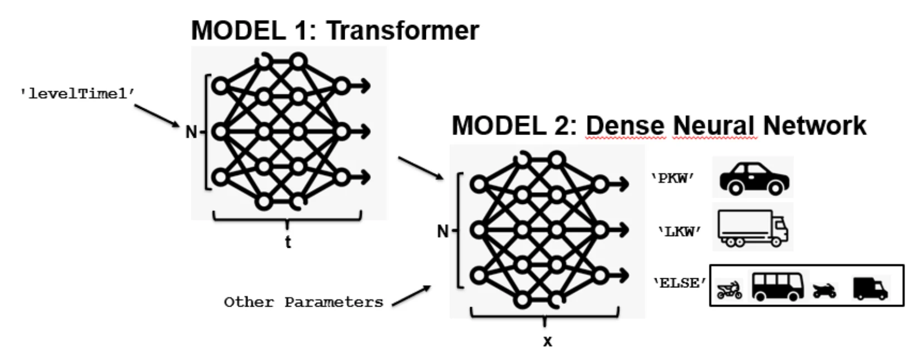
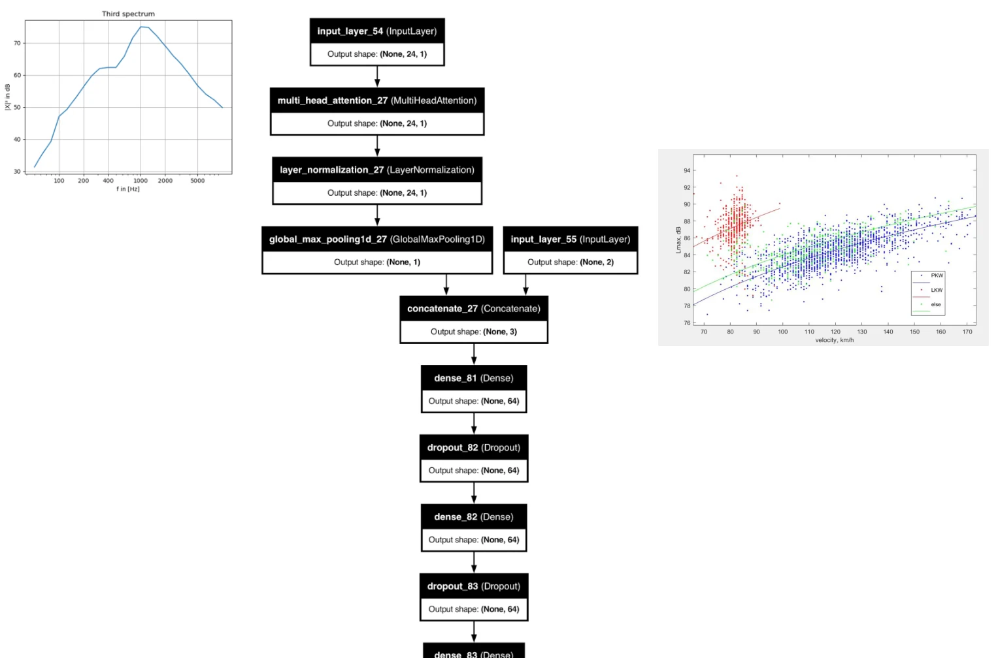
Model testing
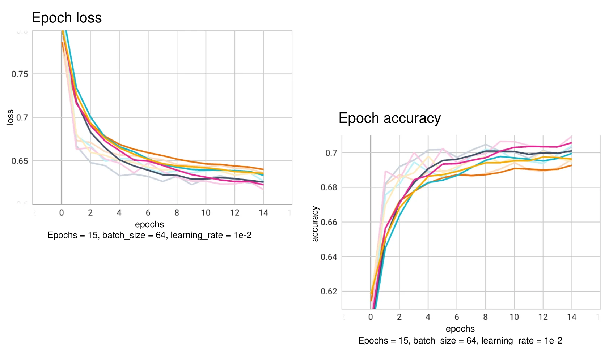
Test accuracy
Confusion matrix from test group ID 2 (rows = true labels, columns = predicted labels).
| True \ Predicted | LKW | PKW | Else | True positive rate |
|---|---|---|---|---|
| LKW | 1574 | 22 | 125 | 91.4 % |
| PKW | 16 | 1470 | 210 | 86.7 % |
| Else | 267 | 824 | 600 | 35.5 % |
For the “Else” class, 48.7 % are misclassified as PKW and 15.8 % as LKW.
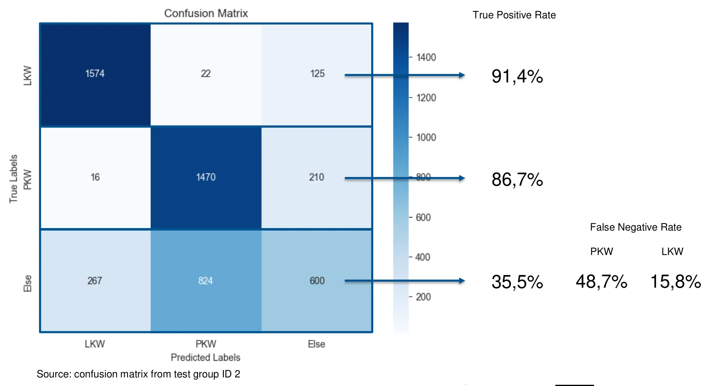
Results
| Group | Accuracy | PKW (TPR) | LKW (TPR) | Else (TPR) |
|---|---|---|---|---|
| Model validation – train and test with special roads | 0.7091 | 0.867 | 0.914 | 0.355 |
| Train with special roads, test on all datasets | 0.7637 | 0.836 | 0.938 | 0.362 |
| Model validation – train and test without special roads | 0.7062 | 0.866 | 0.922 | 0.354 |
| Train with special roads, test without special roads | 0.6759 | 0.941 | 0.965 | 0.118 |
| Train without special roads, test with special roads | 0.4532 | 0.914 | 0.765 | 0.45 |
- Robust classification between LKW (trucks) and PKW (cars) on the given datasets.
- A noticeable limitation when identifying the “Else” group, evidenced by its lower true positive rate.
- The model trained with special-road data performs well on the other datasets, but not the other way round. Using the dataset with special roads for training is recommended.
Approach 2: conventional ML – K-Nearest Neighbors
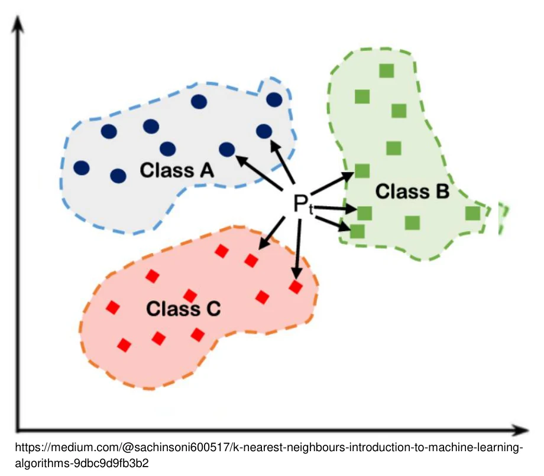
Three classes: PKW, LKW, Else
Input: float array
Output: classification index
Testing results
Full input = levelTime1, trajectory, thirdSpectrum1, T6_1, Lmax1, RadarPulse.
| Training size | Dataset | Input | All | LKW | PKW | Else |
|---|---|---|---|---|---|---|
| (23243, 188) | ID4_normalized.csv | full input | 0.81524 | 0.81905 | 0.94997 | 0.23712 |
| (6130, 188) – three classes equally distributed | ID6_normalized.csv | full input | 0.69073 | 0.91007 | 0.72144 | 0.43209 |
| (5794, 188) – special locations removed | ID9_normalized.csv | full input | 0.70075 | 0.90214 | 0.74240 | 0.45900 |
| (6130, 24) | ID6_normalized.csv | thirdSpectrum1 only | 0.69195 | 0.91223 | 0.67797 | 0.47761 |
| (2043, 188) – reduced training size | ID6_normalized.csv | full input | 0.67813 | 0.90214 | 0.74240 | 0.45900 |
| (8173, 188) – increased training size | ID6_normalized.csv | full input | 0.69814 | 0.91079 | 0.73252 | 0.45152 |
The high overall accuracy of ID4 reflects its unbalanced class distribution (dominated by PKW); its “Else” rate is the lowest.
- Commendable performance with a small dataset; as the volume of data increases, the model improves slightly.
- The model is good at distinguishing PKW and LKW, but its ability to recognise the “Else” category is relatively weak.
- The
thirdSpectrumfeature plays a crucial role in the model’s performance.
Final results
- Two machine-learning approaches to classify the vehicles
- Several data-processing steps to improve the classification
- Improvement of soft skills
- A poster giving an overview of the project week
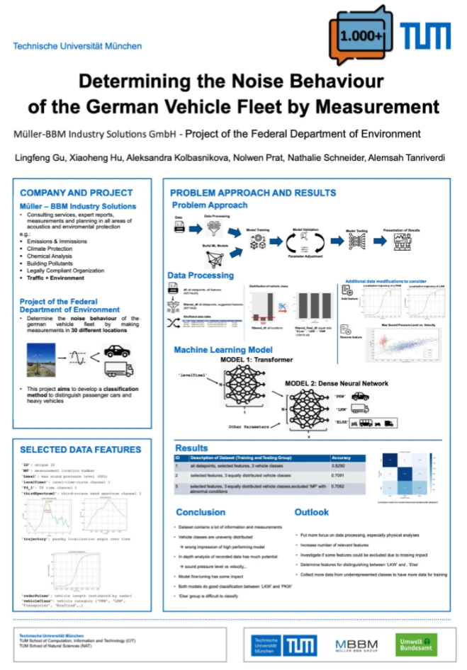
Conclusion
- The dataset contains a lot of information and measurements.
- Vehicle classes are unevenly distributed → this gives a false impression of a high-performing model.
- In-depth analysis of the recorded data has much potential (sound pressure level vs. velocity, …).
- Model fine-tuning has some impact.
- Both models classify well between LKW and PKW.
- The “Else” group is difficult to classify.
Outlook
- Put more focus on data processing, especially physical analyses.
- Increase the number of relevant features.
- Investigate whether some features can be excluded due to missing impact.
- Determine features for distinguishing between LKW and Else.
- Collect more data from under-represented classes for training.